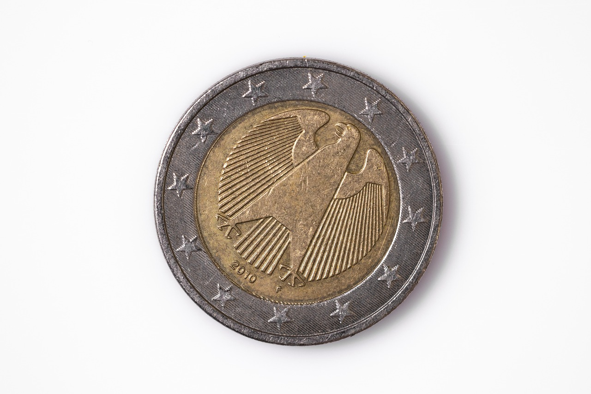

TL;DR
Start your ETF portfolio with funds like VOO for broad exposure. Avoid common mistakes like chasing returns and ignoring fees. Use a 30-day plan to structure your investments effectively.
Start with Broad Market ETFs Like VOO or S&P 500
### Start with Broad Market ETFs Like VOO or S&P 500
If you're new to investing, a great entry point is to consider ETFs that track broad market indices like the S&P 500. For instance, the Vanguard S&P 500 ETF (VOO) is a solid choice with an incredibly low expense ratio of just 0.03%, which means more of your money remains invested rather than going toward fees.
This ETF provides diversified exposure to large-cap U.S. companies, effectively giving you shares in firms like Apple, Microsoft, and Amazon, all in one package.
With a minimum investment of just the price of one share—currently around $400 to $500—you can begin building a balanced initial portfolio. Unlike individual stocks, which require extensive research, investing in VOO simplifies your decision-making, making it easier to grow your wealth without needing expert market knowledge.
When selecting an ETF, focus on those with high liquidity, which ensures that you can easily buy and sell without major price swings. Look for funds with low fees and strong historical performance. For example, VOO has consistently tracked the S&P 500 index, providing a long-term average annual return close to 10% over the past several decades.
Consider a scenario where you invest $500 into VOO at the beginning of your investing journey. Over a 10-year period, assuming an average annual return of 8%, your investment could grow to approximately $1,080 by the end of that decade—without adding any more funds. This demonstrates the immense power of compound interest in action.
Bear in mind that while VOO provides broad market exposure, it does come with market risk. If the overall market declines, so will the value of your investment. However, the diversified nature of ETFs like VOO can help mitigate some of this risk compared to investing in single stocks.
As you gain more comfort and knowledge in investing, you can start to explore sector-specific or international ETFs, gradually building a more complex and tailored portfolio.
Common Misconceptions Lead to Costly ETF Choices
### Common Misconceptions Lead to Costly ETF Choices
Many beginners mistakenly believe that to achieve true diversification, they must own a long list of ETFs. The reality is that a concentrated selection of broad, well-constructed ETFs can provide adequate exposure across various sectors and market caps.
For example, opting for a total market ETF like the Vanguard Total Stock Market ETF (VTI) can give investors exposure to approximately 3,500 U.S. stocks—broad enough to cover both large-cap and small-cap companies without overwhelming complexity.
Research has shown that owning too many ETFs can lead to over-diversification, which can dilute potential returns. For instance, if you hold VTI along with the Financial Select Sector SPDR Fund (XLF), you could find that you're excessively weighted in financials when VTI already includes a broad subset of this sector.
This scenario not only complicates your portfolio but may also lead to missed performance opportunities if one sector underperforms relative to the market.
Many beginners also underestimate the importance of thorough research before investing in ETFs. It’s not just about the number of funds; one must also consider factors like expense ratios, performance history, and the ETF's underlying assets.
For example, the iShares Core S&P 500 ETF (IVV) has a low expense ratio of around 0.03%. This translates to a savings of $3 annually for every $10,000 invested, which can compound significantly over time.
Let’s consider a common case: Alex, a new investor, starts with the intention of building a diversified portfolio. He initially selects six different ETFs across various sectors, assuming this will offer him the best protection and returns.
However, after several months of monitoring his investments, he notices that his overall performance is lagging behind the market average. Upon review, he realizes that the ETFs he selected have overlapping holdings, particularly in technology and consumer discretionary sectors.
This overlap has led to higher fees and redundancy, ultimately yielding lower returns.
In contrast, a simpler approach for Alex might have been to choose two or three broad ETFs that cover the entire market or specific strategies. For example, combining VTI with a bond ETF like the iShares Core U.S.
Aggregate Bond ETF (AGG) could provide a balanced risk-return profile, keeping his investment strategy straightforward and cost-effective. By understanding the nuances between diversification and over-diversification, Alex could avoid the pitfalls of complexity and increase his chances for better long-term investment success.
Step-by-Step: Constructing Your ETF Portfolio Over 30 Days

### Step-by-Step: Constructing Your ETF Portfolio Over 30 Days
Building a simple ETF portfolio can be a structured, engaging process when laid out methodically. Here’s a 30-day approach that any beginner can follow: 1. Week 1: Research – Start with studying various ETFs that align with your risk tolerance and investment objectives. Resources like Morningstar or Google Finance can help evaluate historical performance and expense ratios.
Aim to shortlist at least five ETFs that pique your interest. For instance, if you lean towards conservative investments, look into bond ETFs like the iShares Core U.S. Aggregate Bond ETF (AGG), which typically offers lower volatility with a historical average return of around 3-5% annually.
If you’re more aggressive, consider the Invesco QQQ ETF (QQQ), which focuses on tech stocks and has historically returned around 15% annually, albeit with higher risk. 2. Week 2: Analyze and Select – After narrowing down your choices, analyze each one in detail. Look at the sectors they cover, asset allocation, and past returns. For instance, if you've shortlisted the Vanguard Total Stock Market ETF (VTI), examine the expense ratio, which is just 0.03%, making it quite cost-effective.
Compare these factors to your financial goals. Assess potential trade-offs: while high-growth ETFs can yield great returns, they often come with higher volatility, which might not sit well for risk-averse investors who prefer stability. 3. Week 3: Diversification Strategy – Begin to think about how to diversify your selections to spread risk. This week, consider allocating your portfolio by splitting it among asset classes: 40% in a U.S.
stock ETF like VTI, 30% in an international ETF like the Vanguard FTSE Developed Markets ETF (VEA), and 30% in a bond ETF like AGG to balance the potential ups and downs in the stock market.
During this week, you'll want to factor in diversification correlations; holding both tech-focused ETFs and those in stable sectors can mitigate risk. 4. Week 4: Executing Your Plan – Now it’s time to open a brokerage account if you haven’t already and start making trades based on your research. Make a small initial investment, say $1,000, and divide it according to your diversification strategy.
For instance, invest $400 in VTI, $300 in VEA, and $300 in AGG. Keep an eye on the transaction fees; many brokers now offer commission-free ETF trades, which can save you money.
Scenario: Imagine you're a 30-year-old beginner investor, interested in building a portfolio to save for retirement. Following this 30-day plan, you determine your risk tolerance leans moderate.
After a month of research and analysis, you select a balanced approach with 50% in stock ETFs (like VTI and IWD, the Russell 1000 Value ETF), 30% in international stocks, and 20% in fixed income.
By sticking to a regular investment plan and reviewing your portfolio quarterly, you aim for a target annual return of around 8%, adjusting your allocations as necessary depending on market conditions and personal financial goals.
By adhering to this structured approach, you can feel confident about constructing a simple ETF portfolio tailored to your individual goals while staying within your risk appetite.
Example: An Easy $3,000 ETF Portfolio Breakdown

### Example: An Easy $3,000 ETF Portfolio Breakdown
Let’s illustrate how you can allocate a $3,000 investment in ETFs in a way that suits a beginner’s needs while balancing risk and reward effectively:
- Vanguard S&P 500 ETF (VOO): $1,800 (60%) This ETF focuses on large-cap stocks that are part of the S&P 500 Index, representing roughly 80% of the U.S. equity market's capitalization.
By investing $1,800 here, you’re banking on the historical stability and growth potential of these established companies. Considering the average annual return of the S&P 500 has been around 10% over the last century, this portion of your portfolio can provide solid and consistent returns.
- iShares Core S&P Total U.S. Stock Market ETF (ITOT): $600 (20%) Allocating $600 to ITOT gives you broad exposure to the entire U.S. stock market, including small-cap and mid-cap stocks that VOO might overlook.
While larger companies tend to be more stable, smaller companies can offer higher growth potential but come with increased risk. Historically, the small-cap sector has outperformed larger firms, especially during economic recoveries.
This allocation is ideal if you're willing to embrace some volatility for potentially higher returns.
- Vanguard FTSE Developed Markets ETF (VEA): $600 (20%) To gain international exposure, this $600 investment in VEA allows you to tap into developed markets such as Europe, Canada, and Japan.
Although these markets can sometimes underperform compared to U.S. equities, diversification reduces overall portfolio risk. In times when the dollar strengthens, foreign investments may experience a temporary disadvantage, but they can serve as a hedge against U.S.
market downturns over the long run.
Let’s consider a scenario: Suppose you start investing in this portfolio in January 2023. By the end of the year, the S&P 500 has risen by 15%, while the U.S. small-cap index grows by 12% and international markets post a modest 5% increase. Your initial investment of $3,000 would grow as follows:
- VOO: $1,800 growth leads to a projected $2,070.
- ITOT: $600 growth leads to a projected $672.
- VEA: $600 growth leads to a projected $630.
At the end of the year, your overall portfolio would be worth approximately $3,372, or a 12.4% increase.
However, it’s crucial to also consider the trade-offs and consequences. Higher allocations to U.S. equities provide stability but can lead to concentration risk should U.S. markets perform poorly.
Conversely, investing heavily in international stocks might expose you to currency risk and geopolitical factors. Always assess your risk tolerance, investment horizon, and financial goals before finalizing your ETFs.
This simple yet diversified portfolio can set a strong foundation for a beginner investor without overwhelming complexity.
Avoiding Pitfalls: Common Mistakes That Drain Your Investment

### Avoiding Pitfalls: Common Mistakes That Drain Your Investment
Even seasoned investors can find themselves falling into costly traps, but beginners seem particularly prone to errors that can impact their portfolios severely. Two frequent mistakes include: 1. Chasing High Returns Without Understanding Risk – It’s common for new investors to gravitate toward ETFs that have experienced dramatic past growth. However, they often overlook the volatility associated with these funds.
For example, in 2020, the Invesco QQQ Trust (QQQ), which tracks the Nasdaq-100 Index, saw an incredible return of about 48%, largely driven by tech stock surges during the pandemic.
While that sounds enticing, new investors need to recognize that such returns can come with substantial risk. If the tech sector undergoes a correction, imagine holding onto QQQ during a downturn; an investor might find themselves watching their portfolio plummet 30% or more in value, as seen in the 2022 technology pullback, where QQQ dropped around 29%.
This scenario underscores the importance of understanding not just past performance, but also the potential for volatility and how it aligns with one's individual risk tolerance. 2. Failing to Diversify – Another misstep is over-concentration in one sector or asset class. For instance, an investor might put 100% of their funds into a single sector-focused ETF, such as the Financial Select Sector SPDR Fund (XLF), which primarily comprises large U.S.
banks. While this may seem appealing if one believes the financial sector will thrive, it poses significant risk. When the pandemic hit in 2020, financial stocks stumbled under the pressure of high loan defaults and economic uncertainty.
An investor who had all their money in XLF would have seen a drop of about 25% during that period. Because of this, diversification is essential to mitigate risks—spreading investments across various sectors, including consumer goods, healthcare, and real estate, can cushion against significant losses.
Scenario: Consider Jane, a recent college graduate who is excited to start investing. Lured by QQQ's impressive past performance, she allocates 70% of her $10,000 portfolio into this ETF, with the remaining 30% in XLF.
Initially, her investments thrive as the market rallies, and within six months, she sees her portfolio balloon to $13,000. Feeling confident, Jane neglects to rebalance or reconsider her risk exposure.
When tech stocks experience a downturn in the following quarter, her QQQ investments drop to $8,000, while her financial sector exposure in XLF provides minimal shelter. Ultimately, Jane learns a hard lesson in diversification and the importance of risk management—a painful yet valuable experience reminding her that investing isn't just about chasing high returns, but also about building a balanced and resilient portfolio.
Smart Tools and ETFs to Simplify Your Selection Process
Navigating the world of ETFs requires the right tools and resources to keep your selection process straightforward and effective. Consider leveraging some of these tools: - Morningstar: Best for comprehensive research; it guides you through fund details, star ratings, and peer comparisons.
You'll appreciate its straightforward design and depth of data. - Yahoo Finance: A user-friendly interface to track ETF performance, historical data, and news relevant to your investment choices.
- ETF.com: Ideal for comparing ETFs across performance metrics, expenses, and holdings to find the best fit for your portfolio...
FAQ
What are the best ETFs for beginners?
Beginner-friendly ETFs include the Vanguard S&P 500 ETF (VOO), iShares Core S&P Total U.S. Stock Market ETF (ITOT), and Vanguard FTSE Developed Markets ETF (VEA). These funds offer diversified exposure and low expense ratios, making them ideal starting points.
How much should I invest in ETFs to start?
As a beginner, consider starting with a total investment of around $1,000 to $3,000. This amount allows you to purchase shares of multiple ETFs, providing necessary diversification without overwhelming complexity.
How do I select the right ETFs for my portfolio?
Focus on your investment goals and risk tolerance. Use resources like Morningstar for research and evaluate ETFs based on performance, fees, and whether they align with your financial objectives.
This article has been reviewed for practical usefulness and will be updated as new ETF information emerges.
Next step
Use the article as a decision point, not just reading material. Your next system matters more than more browsing.
Search more articles
Find related tools, workflows, and guides.
Photo credits
- Photo 1: Tommy Shen via Unsplash
- Photo 2: Shanthi Raja via Unsplash
- Photo 3: Pexels via Pixabay
- Photo 4: Engin_Akyurt via Pixabay
- Photo 5: rawpixel via Pixabay